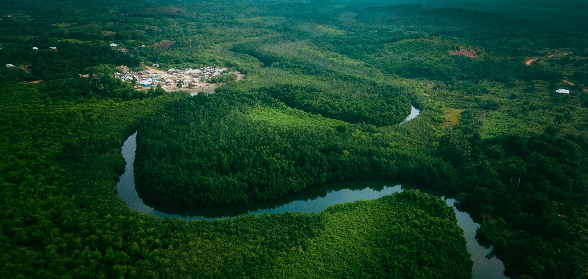

Élaboration et examen de la justification climatique
Pour une note conceptuelle ou une proposition de financement dans le domaine de l'eau et de l'assainissement, au Fonds vert pour le climat (FVC) ou à un fonds similaire. J'élabore la justification climatique avec votre équipe, ou j'examine la justification ou la proposition que vous avez rédigée avant sa soumission.
Eau potable et assainissement
Je travaille aussi bien sur l'approvisionnement en eau que sur l'assainissement. Les composantes d'assainissement sont souvent présentées avec une justification climatique plus faible que l'approvisionnement en eau, alors que les liens sont directs : les inondations endommagent les latrines et les stations de traitement et propagent la contamination fécale, les fosses débordent lors de fortes pluies, la sécheresse compromet l'assainissement à base d'eau, et les eaux usées non traitées émettent du méthane. Une justification solide rend ces liens explicites et les étaye par des données.
Ce que le Fonds évalue
Le Fonds évalue chaque proposition au regard de son potentiel d'impact climatique. Les lacunes fréquentes dans les propositions relatives à l'eau et à l'assainissement sont notamment :
- des aléas décrits mais non reliés aux activités ;
- des déficits de développement présentés comme des impacts climatiques ;
- des composantes d'assainissement sans lien avec les aléas climatiques ;
- des données climatiques sans source ou à une échelle inadaptée ;
- une vulnérabilité décrite en mots là où les données permettraient des chiffres.
Élaborer la justification climatique
Je travaille avec votre équipe et rédige la justification climatique : la chaîne qui va des aléas climatiques observés et projetés aux activités proposées, avec une source pour chaque chiffre.
Ce que vous recevez
- La section de justification climatique, rédigée et prête à être insérée dans la note conceptuelle ou la proposition de financement
- Une annexe technique présentant les données climatiques, les projections et les méthodes à l'échelle du projet
- La part imputable au climat, distinguée de la situation de référence en matière de développement
- La vulnérabilité et l'exposition quantifiées lorsque les données le permettent
- Un registre des sources pour chaque chiffre
- La liste des lacunes de données restantes, chacune assortie de l'action nécessaire pour la combler
Déroulement
- Nous convenons du périmètre, du fonds visé et du calendrier.
- Je collecte et analyse les données et projections climatiques, et vérifie ce que disent déjà les documents de politique nationale.
- Je rédige la section et l'annexe, et les révise avec votre équipe.
- Vous soumettez. Le travail se fait depuis Berlin, sauf si une mission de terrain est convenue dès le départ.
- Sur demande, j'aide à répondre aux commentaires d'examen du Fonds après la soumission.
Examiner votre justification avant la soumission
L'évaluation d'une justification climatique ou d'une proposition existante avant sa soumission, tant qu'il est encore temps de la corriger. La méthode est la même pour chaque examen. Ce qui varie, c'est le référentiel au regard duquel le document est évalué, convenu au départ et indiqué dans le mémorandum.
| Ses propres objectifs | Le document tient-il ce qu'il annonce : affirmations étayées, logique cohérente, chiffres et annexes concordants ? |
|---|---|
| Politique nationale | Est-il aligné sur la contribution déterminée au niveau national, le plan national d'adaptation et la stratégie sectorielle ? |
| Soumission à un fonds | Satisferait-il aux critères d'investissement d'un fonds : chaîne de preuves, additionnalité climatique, traçabilité des données ? |
Ce que vous recevez
- Chaque donnée rattachée à sa source
- Le texte, les chiffres et les annexes vérifiés les uns par rapport aux autres
- Un mémorandum distinguant les corrections nécessaires des corrections recommandées
- Une séance de restitution avec l'équipe de rédaction, et des corrections rédigées sur demande
Les questions auxquelles répond un examen
- Le document est-il prêt pour un fonds, ou s'agit-il d'un document sectoriel habillé en langage climatique ?
- Quelle part du problème relève d'un déficit de développement, et quelle part est imputable au changement climatique ?
- Le bilan hydrique tient-il dans le climat projeté ?
- Les analyses sur lesquelles repose l'argumentation figurent-elles réellement dans le document ?
- Quelles lacunes peuvent être comblées depuis le bureau, et lesquelles demandent un travail de terrain ?
Indépendance. Je n'examine pas un document que j'ai rédigé ou corrigé. Tout examen ultérieur d'un tel document est confié à une autre personne.
Aucun examen ne peut garantir l'approbation d'un fonds. Un examen identifie ce que l'évaluation technique est susceptible de contester, tant qu'il est encore temps de le corriger.
Voyons ensemble comment je peux vous aider.
Décrivez le problème à résoudre et votre deadline.
Prendre contact